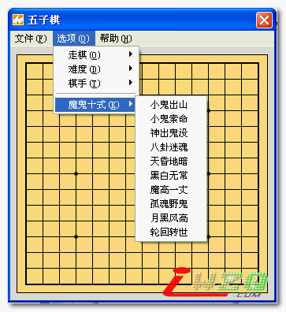

E5五子棋之魔鬼十式(菜鸟必杀) 正式版V1.01
#1 E5五子棋之魔鬼十式(菜鸟必杀) 正式版V1.01 作者：Jean 发表时间：2006-2-18 20:58:46
1、首创将八卦阵和魔鬼十式的算法加入程序中；
2、五位计算机选手采用了五种不同的走棋算法，并具有先后手、低、中、高三种难度选择；
3、由于本程序定位在连珠的初学者，所以采用无禁手规则；
4、注册后，“魔鬼十式”互动教程一定会使您有所收获；
5、内附了先手必胜的“花月”、“浦月”定式，以及“魔鬼十式”定式；
6、可在作者主页www.eleven-t.com免费获得注册码。
作者站点已经无法访问，现将此软件放在本站服务器中

#2 Re:E5五子棋之魔鬼十式(菜鸟必杀) 正式版V1.00 作者：有志青年 发表时间：2006-2-18 21:49:28
Eleven-T E5五子棋之魔鬼十式(菜鸟必杀) V1.00
版权所有 (c)2006 Eleven-T Studio.
------------------------------------------------------------------------------
欢迎使用E5五子棋软件，如果在使用过程中遇到任何问题或是您有什么好的建议或意见，欢
迎与作者联系。 网址：www.eleven-t.com，信箱：Jean_Lau@etang.com，谢谢使用。
版本说明：
闲来无事，经常在联众和QQ游戏下五子棋。久而久之，就有了自己的一套战术。因为以
前我常用“魔鬼”这个ID与人对弈，而此战术也是在那时候创的，所以我称之为“魔鬼十式”。
当然，因为“魔鬼十式”针对性强，并且有些招数都是由必败局演变而来，所以“魔鬼十式”主
要针对的对象乃是初学者，采用的是无禁手非专业规则。所以与专业性强的“黑石”不同，
“魔鬼十式”更具实战性。并且“魔鬼十式”更侧重于学习和进阶，其中还内置了“花月”、
“浦月”、“魔鬼十式”的定式。如果能掌握贯通，在联众和QQ游戏等网络五子棋对弈中取得1段、
2段，1d、2d的成绩可以说是小菜一碟的。因此，“魔鬼十式”也称作“菜鸟必杀”。
1、首创将八卦阵和魔鬼十式的算法加入程序中；
2、五位计算机选手采用了五种不同的走棋算法，并具有先后手、低、中、高三种难度选择；
3、由于本程序定位在连珠的初学者，所以采用无禁手规则；
4、注册后，“魔鬼十式”互动教程一定会使您有所收获；
5、内附了先手必胜的“花月”、“浦月”定式，以及“魔鬼十式”定式；
6、可在作者主页www.eleven-t.com免费获得注册码。
下载地址：
http://www.eleven-t.com/mysoft/E55Chess100.rar
注册机：
http://www.eleven-t.com/mysoft/5ChessReg.exe
是个好东西，类似于教程
#3 Re:E5五子棋之魔鬼十式(菜鸟必杀) 正式版V1.00 作者：Jean 发表时间：2006-2-20 13:05:56
已经升级到 V1.01 了，改正了部分错误。#4 Re:E5五子棋之魔鬼十式(菜鸟必杀) 正式版V1.00 作者：有志青年 发表时间：2006-2-20 13:10:19
悔棋功能没有，这个需要
#5 Re:E5五子棋之魔鬼十式(菜鸟必杀) 正式版V1.00 作者：Jean 发表时间：2006-2-20 15:24:19
当初我还是故意不做悔棋功能的呢，哈哈，因为不想大家太轻易赢了俺的程序。
下个版本我会加上悔棋功能的。
［ 掌棋宣传员 于 2010-8-17 0:51:06 时花20金币送鲜花一朵］
#6 Re:E5五子棋之魔鬼十式(菜鸟必杀) 正式版V1.00 作者：414482371 发表时间：2006-2-20 17:16:09
我不懂了什么是悔棋啊我也是这俩天才学的#7 Re:E5五子棋之魔鬼十式(菜鸟必杀) 正式版V1.00 作者：yitianyu8457 发表时间：2006-3-1 11:39:50
为什么总出现 候选资源 出现错误的提示?#8 Re:E5五子棋之魔鬼十式(菜鸟必杀) 正式版V1.00 作者：k23456 发表时间：2006-3-4 23:59:00
主页无法显示啊#9 Re:Re:E5五子棋之魔鬼十式(菜鸟必杀) 正式版V1.00 作者：谷家相 发表时间：2006-3-5 18:56:09
好，请多多指教了，还有呀，我很喜欢新版
#10 Re:E5五子棋之魔鬼十式(菜鸟必杀) 正式版V1.00 作者：qq4114 发表时间：2006-4-5 13:22:37
我怎么装不了啊#11 Re:E5五子棋之魔鬼十式(菜鸟必杀) 正式版V1.00 作者：陈庆斌 发表时间：2007-3-4 4:35:33
E5五子棋之魔鬼十式注册码我找不到。有谁给我一个？谢谢！我的QQ：158035888#12 Re:E5五子棋之魔鬼十式(菜鸟必杀) 正式版V1.00 作者：人工智能 发表时间：2007-3-9 21:42:37
怎么注册啊 也给我个注册吗吧 QQ：108218114 谢谢#13 Re:E5五子棋之魔鬼十式(菜鸟必杀) 正式版V1.00 作者：步青云 发表时间：2007-3-11 10:15:54
我也要 9639110
#14 Re:E5五子棋之魔鬼十式(菜鸟必杀) 正式版V1.00 作者：青龙 发表时间：2007-3-12 16:56:10
我要一个注册码。qq:37841173。谢谢！！！
#15 Re:E5五子棋之魔鬼十式(菜鸟必杀) 正式版V1.00 作者：友善 发表时间：2007-3-20 19:18:01
下载不了
#16 Re:E5五子棋之魔鬼十式(菜鸟必杀) 正式版V1.01 作者：友善 发表时间：2007-5-12 1:05:42
谢谢我搞定咯
#17 Re:E5五子棋之魔鬼十式(菜鸟必杀) 正式版V1.01 作者：wuzhip 发表时间：2007-6-3 15:18:02
怎么没有地方获取注册码啊。主页又打不开。注册机下载不了哟
#18 Re:E5五子棋之魔鬼十式(菜鸟必杀) 正式版V1.01 作者：tuxt 发表时间：2007-6-9 22:30:19
注册码的软件下不了 啊...
#19 Re:E5五子棋之魔鬼十式(菜鸟必杀) 正式版V1.01 作者：星尘 发表时间：2007-6-21 13:54:42
下载了，可以注册。看压缩包中的注册信息。#20 Re:E5五子棋之魔鬼十式(菜鸟必杀) 正式版V1.01 作者：阿云 发表时间：2007-6-23 20:49:29
是个好东西啊......
#21 Re:E5五子棋之魔鬼十式(菜鸟必杀) 正式版V1.01 作者：freedo 发表时间：2007-8-30 22:18:28
谢谢你的分享#22 Re:E5五子棋之魔鬼十式(菜鸟必杀) 正式版V1.01 作者：龙之脊 发表时间：2007-9-22 8:09:47
不知道 可不可以下载？
#23 Re:E5五子棋之魔鬼十式(菜鸟必杀) 正式版V1.01 作者：敢脱天下先 发表时间：2008-4-25 9:22:36
稀饭。。
偶收藏一下。
#24 Re:E5五子棋之魔鬼十式(菜鸟必杀) 正式版V1.01 作者：无棋 发表时间：2008-5-26 12:43:49
注册机好像下不了啊#25 Re:E5五子棋之魔鬼十式(菜鸟必杀) 正式版V1.01 作者：月明竹青曲悠 发表时间：2008-5-27 17:53:06
用了最高级别了，这软件的水平好像还是不行嘛！！
#26 Re:E5五子棋之魔鬼十式(菜鸟必杀) 正式版V1.01 作者：myants 发表时间：2009-3-25 22:10:03
软件棋力貌似比较弱啊#27 Re:E5五子棋之魔鬼十式(菜鸟必杀) 正式版V1.01 作者：天花 发表时间：2009-3-30 18:10:30
怎么不行啊,,點了開不了
#28 Re:E5五子棋之魔鬼十式(菜鸟必杀) 正式版V1.01 作者：天花 发表时间：2009-3-30 18:15:18
走了沒有用
#29 Re:E5五子棋之魔鬼十式(菜鸟必杀) 正式版V1.01 作者：歇斯底里 发表时间：2009-4-3 11:20:19
一般般。。。#30 Re:E5五子棋之魔鬼十式(菜鸟必杀) 正式版V1.01 作者：服鸟 发表时间：2009-4-16 20:42:17
教程比较好，算法比较笨呵呵，电脑走固定的
#31 Re:E5五子棋之魔鬼十式(菜鸟必杀) 正式版V1.01 作者：白鹭 发表时间：2010-8-16 23:22:20
虽然棋力不强，但对初学者很有帮助。这种软件思路很不错，希望能有类似这样有趣的软件能继续被做出来，当然棋力能 稍微抬高一点 就好了
#32 Re:E5五子棋之魔鬼十式(菜鸟必杀) 正式版V1.01 作者：轻盈挑射 发表时间：2010-8-21 17:59:30
不错 不错
灰常稀饭